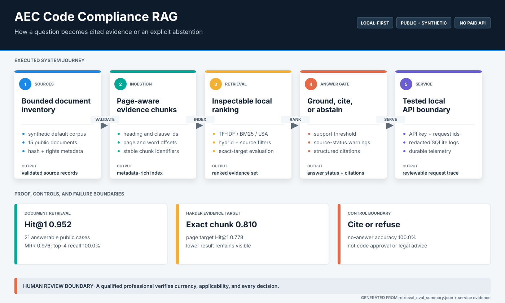
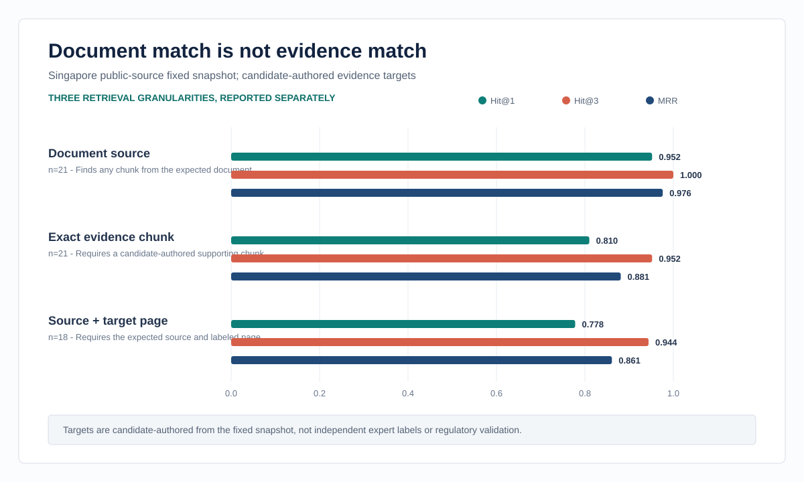
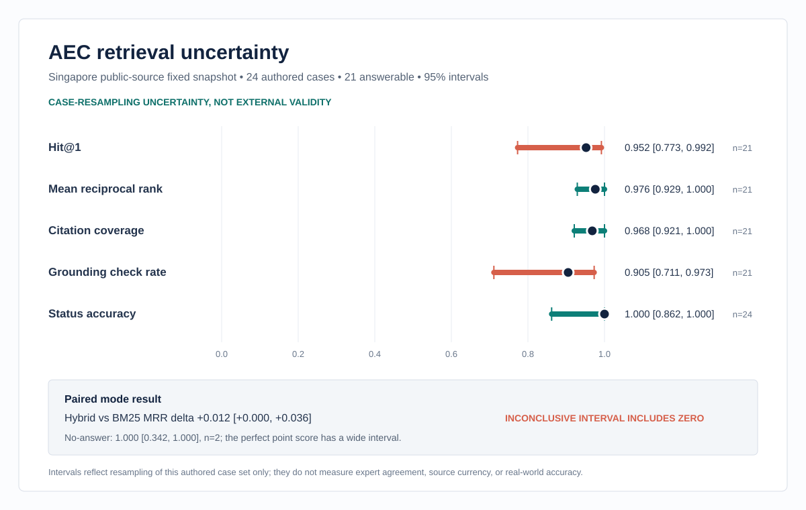

AEC questions need the right publication, passage, page, and source status rather than a plausible unsupported answer.
Flagship case study / Source-grounded AI
AEC Code Compliance RAG
A local document-assistance system that retrieves, cites, or refuses.
The project treats evidence location, source identity, unsupported scope, and service behavior as separate engineering problems. It runs without a paid API and keeps every headline metric tied to a fixed evaluation artifact.
Actual local interface / labeled demo data
Page-aware ingestion, four local retrieval modes, structured citations, abstention, FastAPI contracts, and payload-free telemetry.
Document Hit@1 0.952 and exact-target Hit@1 0.810 across 21 answerable public-source cases, with uncertainty and failures retained.
Document assistance only. No authority validation, live amendment guarantee, compliance certification, or professional sign-off.
System
Evidence remains traceable from source to response
Each stage has a typed output and a visible control boundary. Retrieval can succeed at the document level while still missing the labeled supporting passage, so those measurements remain separate.

Measured behavior
Strong publication retrieval, weaker passage localization
The harder exact-target and page-level metrics prevent the document score from being mistaken for answer support. Labels were authored from the fixed local snapshot and have not been independently expert-reviewed.


Engineering decisions
Designed for inspection before fluency
The most important choices make incorrect confidence easier to detect and reproduce.
Stable evidence identity
Source hashes, page numbers, headings, clause identifiers, and word offsets survive ingestion so citations can be tested rather than formatted after generation.
Comparable local baselines
TF-IDF, BM25, dense LSA, and hybrid ranking share one corpus and query set. The hybrid-versus-BM25 MRR interval includes zero, so mode superiority remains inconclusive.
Fail-closed answer path
Unsupported scope and weak evidence produce an explicit no-answer response. Source-status warnings remain attached to retrieved material.
Bounded service evidence
Contract and fixed-workload checks cover authentication, validation, redaction, telemetry durability, and in-process response objectives without claiming deployment or uptime.
Retained failure
Publication-level success can conceal evidence-level misses.
Exact-target Hit@1 trails document Hit@1 by 0.142. That gap is shown as a result to improve, not rounded away as a successful RAG claim.
Inspect failure analysisRun locally
Reproduce the default evidence path
The default corpus is bundled and synthetic so the evaluation, service checks, tests, and interface run without network access or paid APIs.
python projects/aec-code-compliance-rag/scripts/evaluate_retrieval.py
python projects/aec-code-compliance-rag/evaluate_service.py
python -m pytest tests/test_rag.py tests/test_rag_service.py
streamlit run projects/aec-code-compliance-rag/app.py